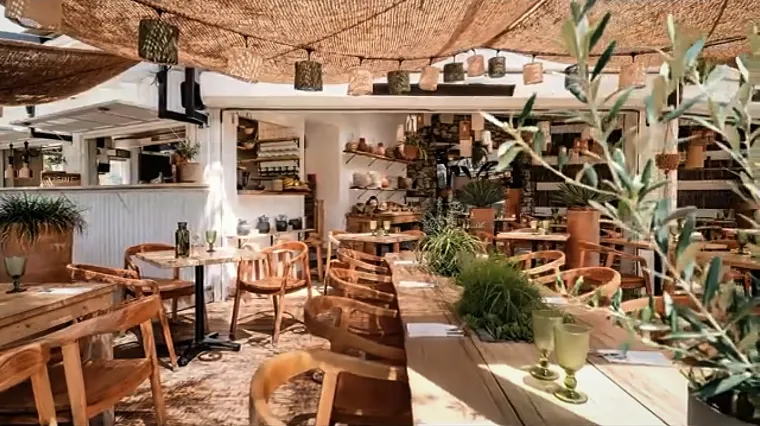

À quelle heure se couche le soleil à Sète ?
L’heure dorée — la dernière heure, celle où tout devient orange — commence vers —.
Calculé pour aujourd’hui, à la latitude et la longitude du Mont Saint-Clair (43,39° N — 3,68° E), en heure locale de Sète. Si votre téléphone est réglé sur un autre fuseau, l’heure affichée reste celle de Sète.
Les sept prochains soirs
D’un jour à l’autre l’écart est d’une ou deux minutes ; d’une semaine à l’autre, il se voit. Au printemps le soleil se couche de plus en plus tard, à l’automne de plus en plus tôt.
Heures de Sète. L’heure dorée commence une heure avant, le ciel reste allumé une bonne demi-heure après.
Mois par mois
Le soleil se couche le plus tard fin juin — autour de 21h30 — et le plus tôt à la mi-décembre, un peu après 17h. Entre les deux, quatre heures d’écart.
| Mois | Le 1er | Le 15 | Heure dorée (le 15) |
|---|---|---|---|
| Janvier | 17h19 | 17h33 | 16h33 |
| Février | 17h55 | 18h14 | 17h14 |
| Mars | 18h33 | 18h50 | 17h50 |
| Avril | 20h10 | 20h27 | 19h27 |
| Mai | 20h46 | 21h01 | 20h01 |
| Juin | 21h18 | 21h27 | 20h27 |
| Juillet | 21h29 | 21h24 | 20h24 |
| Août | 21h08 | 20h49 | 19h49 |
| Septembre | 20h22 | 19h57 | 18h57 |
| Octobre | 19h27 | 19h03 | 18h03 |
| Novembre | 17h37 | 17h21 | 16h21 |
| Décembre | 17h10 | 17h09 | 16h09 |
Sur un écran étroit, la colonne de l’heure dorée est masquée : elle commence toujours une heure avant le coucher.
Le passage à l’heure d’été, fin mars, fait bondir le coucher du soleil d’une heure d’un jour à l’autre : c’est la seule marche de l’année. Le retour à l’heure d’hiver, fin octobre, produit l’inverse.
Le point le plus haut, face à l’ouest
Sète est une île posée entre la mer et l’étang de Thau, et le Mont Saint-Clair la domine tout entière. Le site des Pierres Blanches occupe son versant ouest : c’est de là qu’on voit le soleil descendre, au-dessus de l’eau, sans rien devant.
- 187 mètres d’altitude, au bout de l’allée Pierre Barthas.
- En pleine forêt domaniale : la pinède, la garrigue, et l’eau derrière.
- Parking gratuit sur place, ligne 5 arrêt Les Pierres Blanches.
- Montez une heure avant : la lumière se joue dans la montée, pas au moment où le soleil touche l’eau.


Le meilleur service de la maison
D’avril à septembre, les brochettes sont montées l’après-midi et grillées pendant le service. Le soleil descend au milieu du repas : c’est ce service-là qui se remplit le plus vite.
— Le reste de l’année, la maison ferme plus tôt — et de décembre à mars, elle ferme tout court.
Avant de monter
À quelle heure faut-il arriver pour voir le coucher de soleil ?
Une heure et demie avant. Le temps de s’installer, de commander, et d’avoir l’assiette devant soi quand la lumière tourne. Arriver au moment exact du coucher, c’est le manquer.
Faut-il réserver ?
Pour le service du soir en été, oui, et quelques jours à l’avance pour les week-ends. La réservation se prend au téléphone, au 04 67 53 33 40 : nous confirmons chaque table de vive voix.
Est-ce qu’on voit le soleil toucher la mer ?
Cela dépend de la saison : la position du coucher se déplace le long de l’horizon d’un bout de l’année à l’autre, et la brume de chaleur mange parfois les dernières minutes. Ce qui ne change pas, c’est la lumière de l’heure d’avant.
Et en hiver ?
Le soleil se couche vers 17h, et la maison est fermée de décembre à fin mars. Le site des Pierres Blanches, lui, reste ouvert : la vue ne ferme pas. Nous rouvrons le 1ᵉʳ avril.
Voir aussi : les restaurants avec vue sur la mer à Sète